Historia
Baki, conocido también como "Grappler Baki," es una serie de manga y anime creada por Keisuke Itagaki. La historia sigue las aventuras de Baki Hanma, un joven luchador que aspira a superar a su padre, Yujiro Hanma, conocido como "La criatura más fuerte del mundo".
Sinopsis
La serie sigue las intensas batallas y desafíos que Baki enfrenta en su camino para ser el más fuerte, enfrentándose a enemigos letales y entrenando al límite.
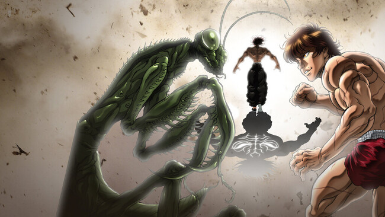Personajes
Baki Hanma
Protagonista de la serie, determinado a superar a su padre y convertirse en el luchador más fuerte.
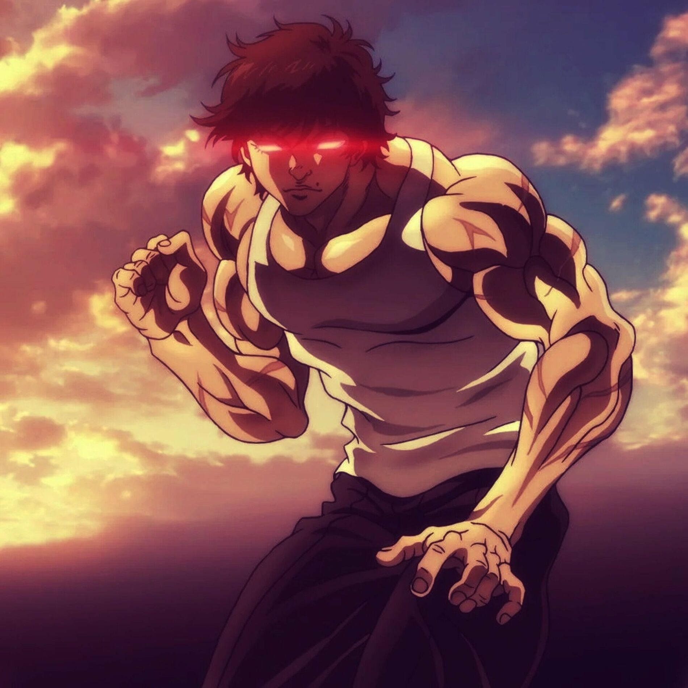Yujiro Hanma
El padre de Baki y el hombre más fuerte del mundo, conocido como el "Ogro".
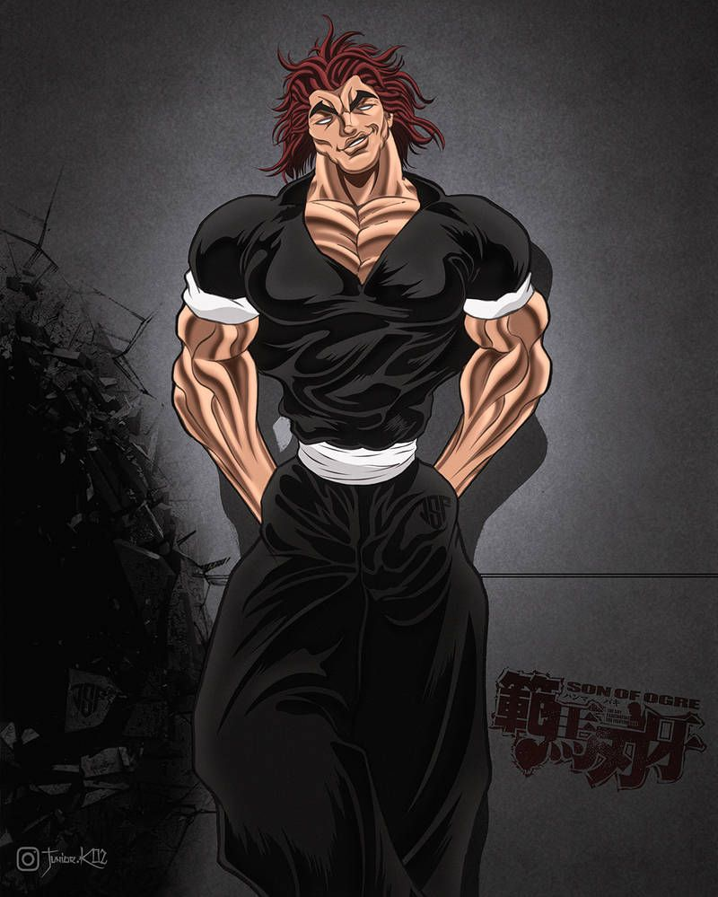Jack Hanma
Es el medio hermano de Baki Hanma y el hijo ilegítimo de Yujiro Hanma. Es conocido por ser un gigante musculoso que ha recurrido al uso de drogas y cirugías para aumentar su fuerza. Su objetivo es superar a su padre y a su hermano y, para ello, no duda en enfrentarse a cualquier desafío. En definitiva, la fuerza bruta que tiene es impresionante, ya que puede levantar toneladas y destrozar paredes con sus puños sin problema alguno.
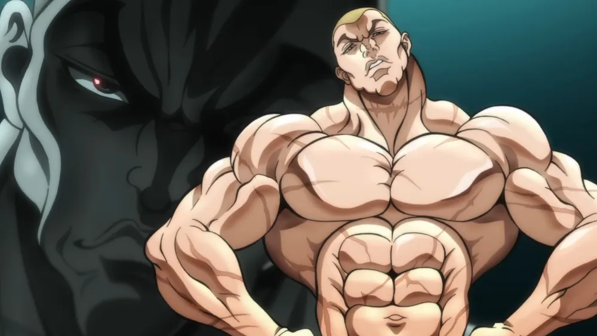Shibukawa Goki
Es el maestro del aikido, un arte marcial que se basa en el uso de la fuerza del oponente para derrotarlo. Shibukawa es capaz de anticiparse a los movimientos de sus rivales y aprovechar su equilibrio, peso y ángulo para lanzarlos por los aires o someterlos con llaves. Su técnica es tan refinada que puede vencer a contrincantes mucho más grandes y fuertes que él.
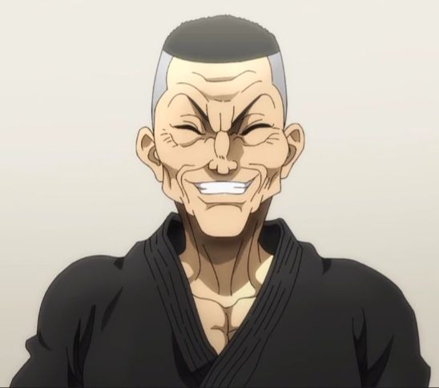Retsu Kaioh
Se trata del último descendiente de la legendaria familia Kaioh, los maestros del kung-fu chino. Retsu es un experto en diversas disciplinas marciales, desde el boxeo hasta el tai chi. Su estilo es versátil y adaptable, por lo que tiene la capacidad de cambiar según la situación y el oponente. También posee una gran fuerza física y mental, así como un profundo conocimiento de la anatomía humana, lo que le permite atacar los puntos vitales de sus enemigos.
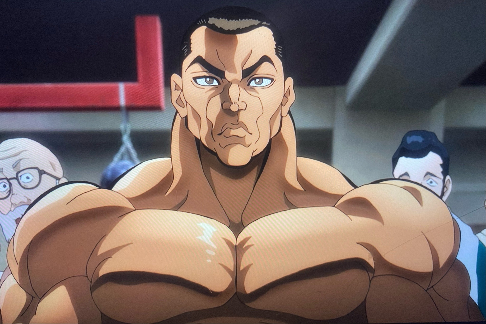Doppo Orochi
Doppo es un hombre severo y honorable que dedica su vida al entrenamiento y al perfeccionamiento de su arte. Su karate es devastador, capaz de infligir daños mortales con cada golpe. Asimismo, ha enfrentado a los más feroces adversarios, desde animales salvajes hasta Yujiro Hanma, quien es considerado como el hombre más fuerte del mundo.
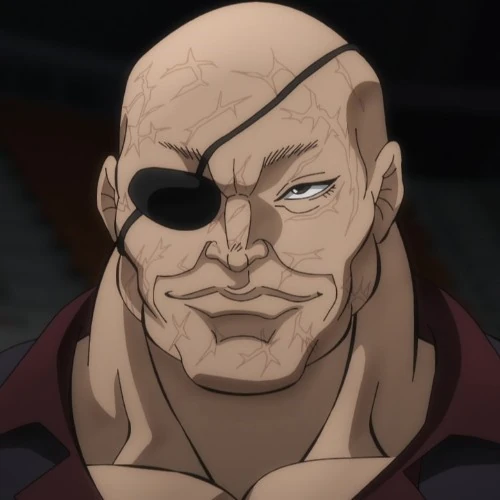Orden de la Saga
Para disfrutar de Baki en su totalidad, aquí tienes el orden recomendado de la saga:
- Grappler Baki (primera saga): Baki, desde joven, se entrena intensamente en artes marciales y diversas formas de combate para convertirse en el luchador más fuerte. Participa en torneos clandestinos donde enfrenta a luchadores extremadamente poderosos y diversos.
- Baki (segunda saga): La serie sigue a Baki mientras se enfrenta a cinco condenados a muerte extremadamente peligrosos que escapan de sus prisiones alrededor del mundo. Estos criminales buscan la derrota definitiva y consideran a Baki un oponente digno.
- Hanma Baki (tercera saga): En esta parte, Baki se prepara para la batalla final contra su padre, Yujiro Hanma. La serie explora más sobre la relación entre Baki y su padre, así como el increíble poder de Yujiro.
- Baki-Dou (cuarta saga): En esta continuación, Baki sigue enfrentándose a desafíos aún más grandes, incluyendo combates con luchadores legendarios y otros personajes extraordinarios.
Mejores peleas
-
Baki Vs Biscuit Oliva
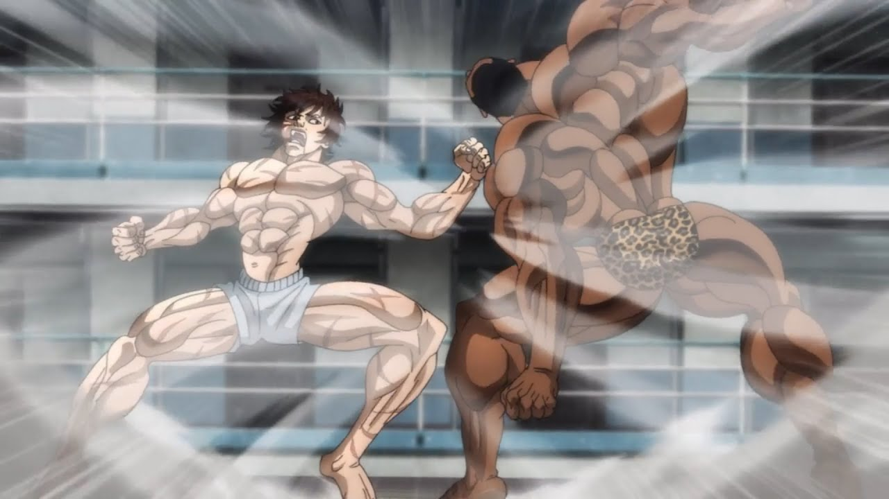Oliva pelea con Baki y es derrotado por su fuerza pura , porque Baki despertó Demon Face en su espalda durante esta pelea.
-
Kaoru Hanayama Vs Spec
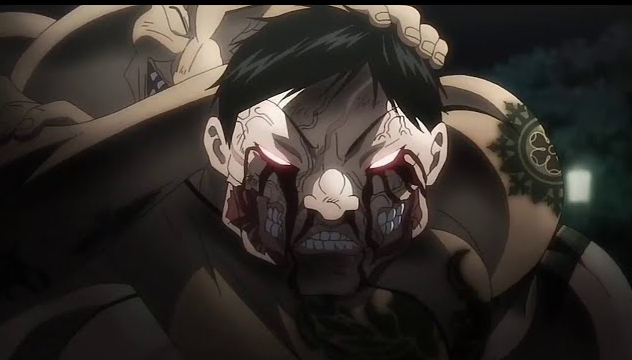la pelea entre Kaoru Hanayama y Spec es un momento brutal y emblemático que muestra la resistencia física y mental de ambos combatientes. La batalla ocurre en la saga de los "Condenados a Muerte", donde Spec, un despiadado criminal de gran tamaño y experiencia en técnicas letales, ha escapado de prisión y busca un oponente digno en Tokio. Spec, con su sadismo extremo, comienza atacando a civiles, llamando la atención de Hanayama, quien lo enfrenta para proteger su honor y a su ciudad.
-
Pickle vs Jack
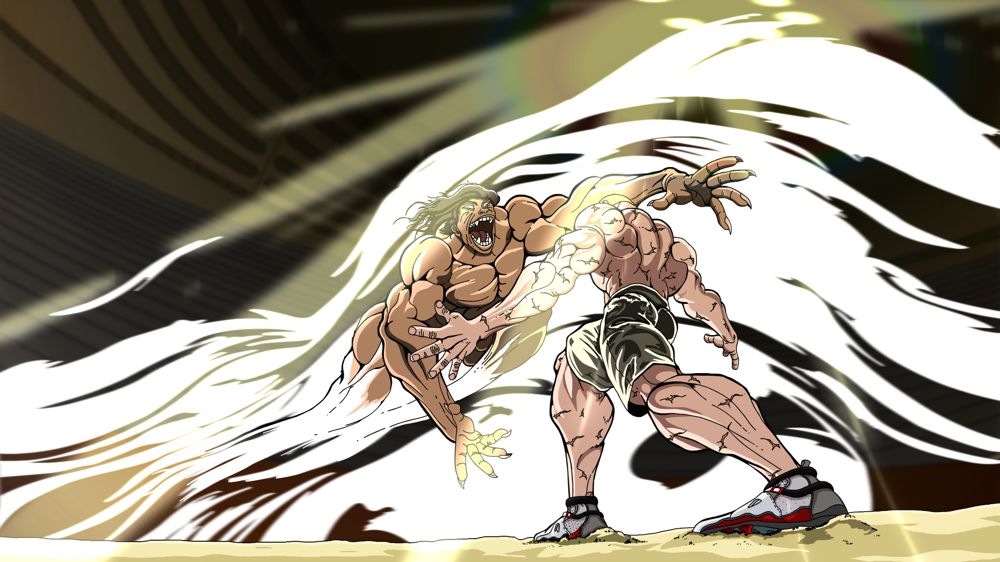Pickle terminó ganando cuando levantó el enorme cuerpo de Jack usando solo su boca y luego lo arrojó a una velocidad tan grande que le arrancó la piel de la parte inferior del rostro. Enfurecido, Jack lanzó una andanada de golpes a Pickle, pero solo logró excitar al cavernícola lo suficiente como para usar su postura inclinada hacia adelante
-
Yujiro Vs Kaku Kaioh
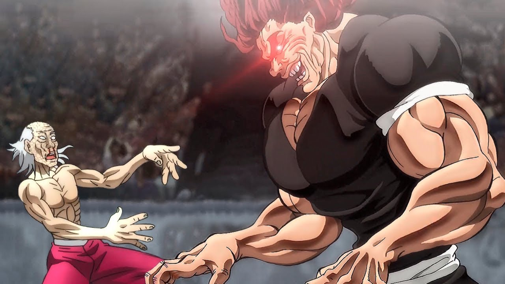Yujiro finalmente derrotó a Shaori de Kaku con una fuerza abrumadora. Sin embargo, incluso antes de usar Demon Back, pudo dañar a Kaku con un pequeño truco ingenioso.
-
Yujiro Vs baki
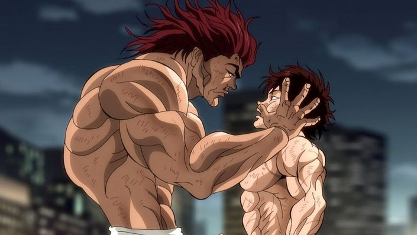Aunque Baki no derrota a Yujiro, finalmente logra darle una buena pelea e impresionarlo, lo que incita a Yujiro a honrar a Baki con el título de más fuerte en la Tierra. Baki, sin embargo, no consideró que esto fuera una verdadera victoria.